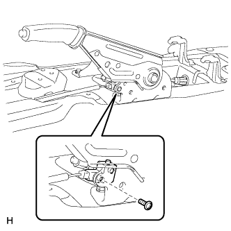
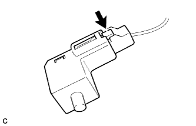

ВЫКЛЮЧАТЕЛЬ СТОЯНОЧНОГО ТОРМОЗА > СНЯТИЕ |
| 1. СНИМИТЕ ВЕЩЕВОЙ ЯЩИК В ОБЛИЦОВКЕ ТУННЕЛЯ ПОЛА В СБОРЕ |
Для моделей с автоматической трансмиссией:
Снимите вещевой ящик в облицовке туннеля пола в сборе (Нажмите здесь).
Для моделей с механической трансмиссией:
Снимите вещевой ящик в облицовке туннеля пола в сборе (Нажмите здесь).
Для моделей с холодильной камерой:
Снимите вещевой ящик в облицовке туннеля пола в сборе (Нажмите здесь).
| 2. СНИМИТЕ ВЫКЛЮЧАТЕЛЬ СТОЯНОЧНОГО ТОРМОЗА В СБОРЕ |
|  |
Выверните винт и снимите выключатель стояночного тормоза с рычага стояночного тормоза.
|  |
Отсоедините разъем.